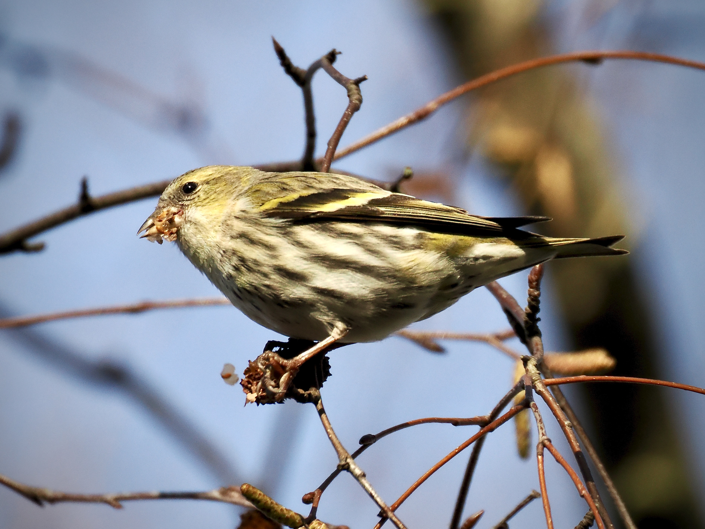
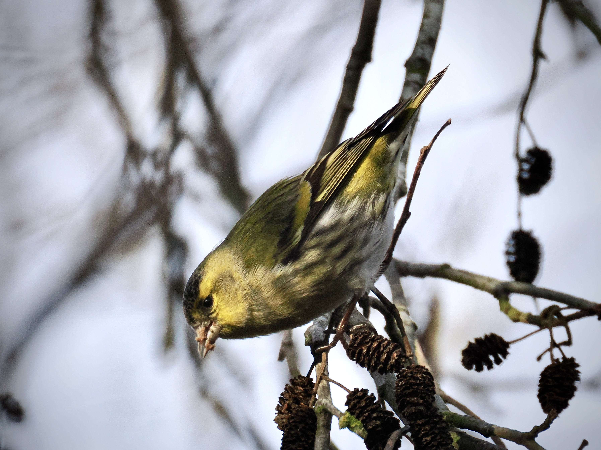

Eurasian Siskin
Spinus spinus
Order: Passeriformes
Family: Fringillidae

One of my favourite finches. Overall yellow with obvious wing bars. Female is paler and highly streaked.

Male is brighter yellow with a black cap and bib. Has less streaking on the breast and head.